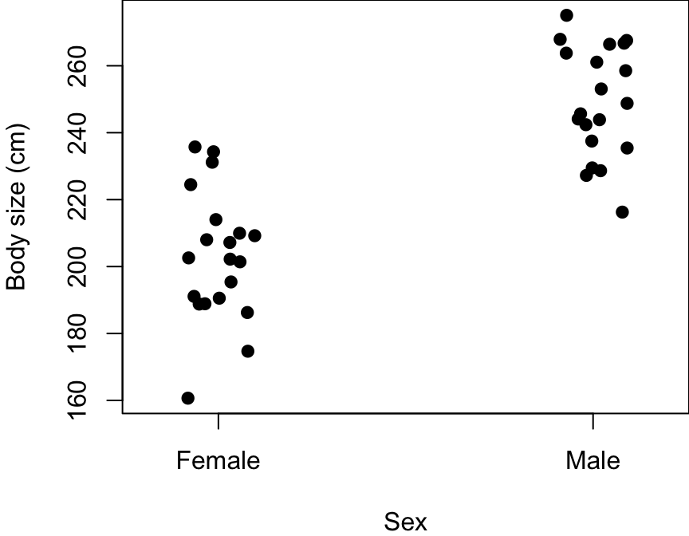
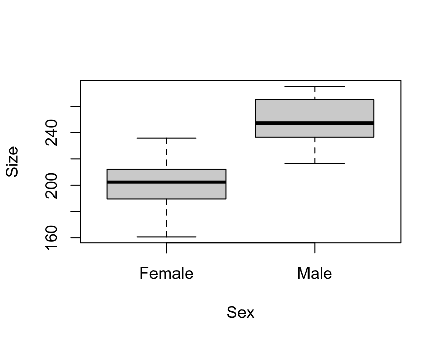
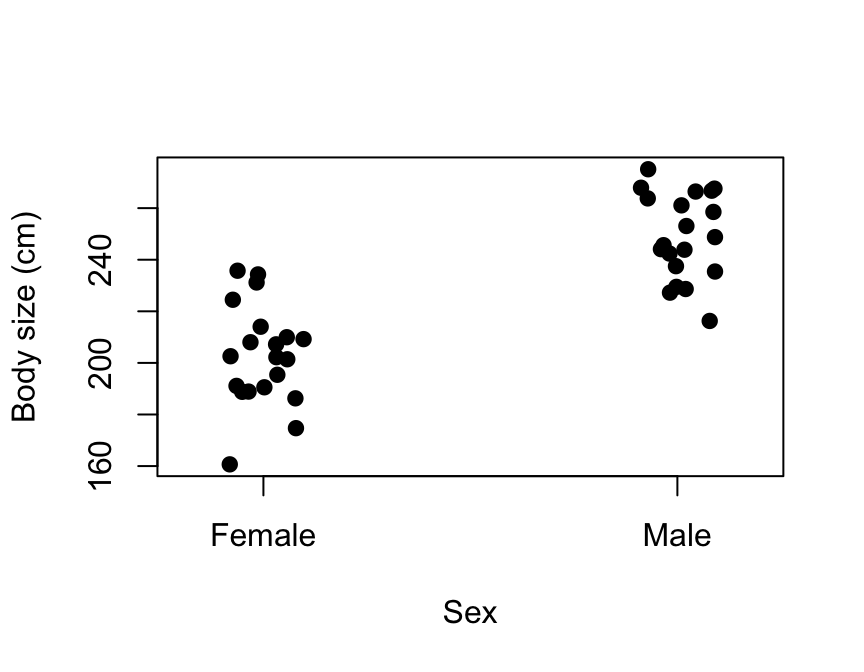
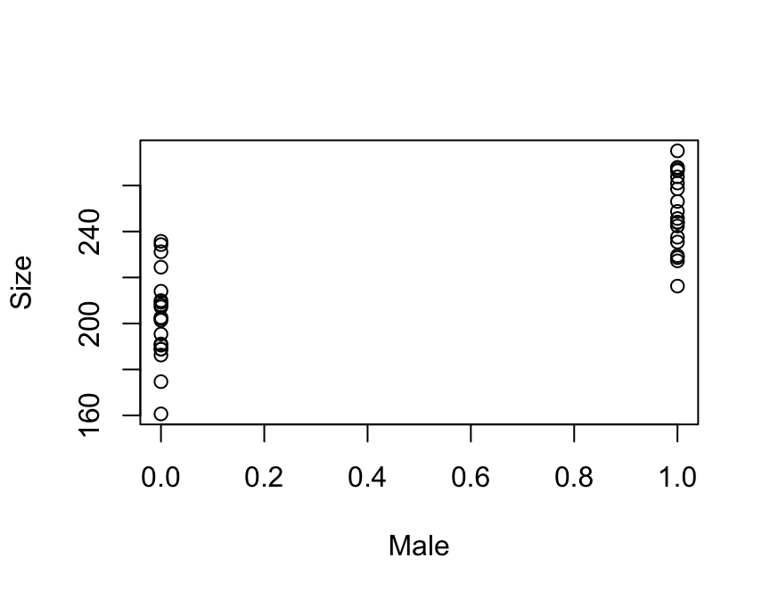

Analysis of Categorical Data
NRES 710
Last compiled: 2024-08-05
Summary
Up to this point, we have been operating under the idea that we have been examing the relationship between a continuous Y variable and a continuous X variable.
What if we no longer have a continuous X-variable, but instead have a categorical X-variable?
Let’s assume that X-variable is binomial (two categories):
Continuous Y, Categorical X (binomial)
Q: How would we typically analyze data with a categorical X and a continuous, normally-distributed Y?
t-Test! Named after the ‘Student t distribution’.
t-Tests
For example, let’s say we are interested in testing for body size differences between two sexes of elephant seal (Mirounga leonina).

Photo: Luke Verburgt
\(X_1\) = male, \(X_2\) = female, \(Y\) = length
Our data might look like this:

Both the female and male data are normally distributed. I’m putting a slight ‘jitter’ on these points, so they can be visualized easier by the naked eye.
We want to know: how much larger are males than females? Or, what is the difference between the mean of females and males? We can visualize this with a horizontal line in the middle of each point cloud, and an arrow between the two means.
Our scientific effort might focus on testing the null hypothesis:
\(H_0\): no difference between groups
- Or, \(\mu_{females} = \mu_{males}\)
- Or, \(\mu_{females} - \mu_{males}\) = 0
These are all the same, and are core to our science-drive hypothesis that we want to test.
From a statistical perspective, we are interested in knowing whether males are significantly larger than females, and measuring that effect (if any).
Let’s assume that we know truth for this graph:
- Average mass of males is 250 kg
- Average mass of females is 200 kg
- \(\sigma\) = 20 kg
The truth is that males are larger than females.
Simple t-test in R
Let’s make these data in R, and run a t-test:
### Code for simulating data to be analyzed body size data for two sexes
# Set the seed for reproducibility
set.seed(123)
# Simulate the binomial X-variable (sex)
n <- 40
x <- c(rep("Female", n/2), rep("Male", n/2))
x <- factor(x)
# Simulate continuous y-variable data
y <- ifelse(x == "Female",
rnorm(n/2, mean = 200, sd = 20), #females
rnorm(n/2, mean = 250, sd = 20)) #males
# Create dataframe
datum <- data.frame(Sex = x, Size = y)
# Examine the data
head(datum)## Sex Size
## 1 Female 188.7905
## 2 Female 195.3965
## 3 Female 231.1742
## 4 Female 201.4102
## 5 Female 202.5858
## 6 Female 234.3013tail(datum)## Sex Size
## 35 Male 266.4316
## 36 Male 263.7728
## 37 Male 261.0784
## 38 Male 248.7618
## 39 Male 243.8807
## 40 Male 242.3906# Plot the data to examine it!
plot(Size ~ Sex, data=datum)
# Box and whiskers plot!
# Bold black line = median
# Edges of box: 75% and 25% quartiles
# Bars: 95% limits
# Points: outliers, or 5% of data outside of the 95% intervals
# Analyze this using the 't.test()' function in R:
help(t.test)
results <- t.test(Size ~ Sex, data = datum)
# Examine the summary
summary(results)## Length Class Mode
## statistic 1 -none- numeric
## parameter 1 -none- numeric
## p.value 1 -none- numeric
## conf.int 2 -none- numeric
## estimate 2 -none- numeric
## null.value 1 -none- numeric
## stderr 1 -none- numeric
## alternative 1 -none- character
## method 1 -none- character
## data.name 1 -none- character# Some functions in R don't have summary functions for them because they are so simple!
# Just ask for the object
results##
## Welch Two Sample t-test
##
## data: Size by Sex
## t = -8.0694, df = 37.082, p-value = 1.104e-09
## alternative hypothesis: true difference in means between group Female and group Male is not equal to 0
## 95 percent confidence interval:
## -57.72764 -34.55712
## sample estimates:
## mean in group Female mean in group Male
## 202.8325 248.9749All the results come from the object itself!
- t-statistic
- degrees of freedom
- p-value – testing the null hypothesis that there is no difference in the means between the two groups
- 95% confidence intervals – on the difference between the two groups
- average size of female group
- average size of male group
Q: What is the one thing it doesn’t give us that we might want to see??
It does not provide an estimate of the size difference between two groups!! This is not helpful (and somewhat silly)!
We can calculate it by doing some math… subtract the smaller group from the larger group:
251.2 - 198.9## [1] 52.3This is how much larger the males are than females.
The confidence interval would be:
(64.44 - 40.14)/2## [1] 12.15Q: Why is the 95% confidence interval that R provided negative?
R calculated this effect as doing females minus males, whereas I calculated it as males minus females. We just need to be savvy to make sure we think about the outputs and ensure that everything makes sense. Use common sense.
Questions?
t-tests are just a regression
One thing that always confused me about learning statistics as an undergraduate and graduate student was that all of the usual analyses (regression, t-test, ANOVA, ANCOVA, etc.) are all taught as ‘different tests’. It creates many more boxes and relationships that you have to memorize – different things to categorize in your brain as different and thus requires more effect to memorize.
Here’s a little secret… t-tests are just a regression! And can be analyzed as such with ‘lm()’!
Q: What’s our linear model again??
\(Y = \beta_0 + \beta_1 X_1 + \epsilon \sim N(0, \sigma)\)
We can use the linear model to analyze the elephant seal size data!
\(Size = \beta_0 + \beta_1 Sex + \epsilon \sim N(0, \sigma)\)
Questions you might ask yourself:
- Why teach this as a whole-new test, when it’s the same mathematical formula we have looked at all along?
- And, since sex is not a number, how would this work?
It works through the magical process of ‘dummy-coding’!
Dummy-coding – a process to convert categories to 1s and 0s. For example:
Sex: Male:
Male 1
Male 1
Female 0
Female 0
Now, we can replace our sex variable with male:
\(Size = \beta_0 + \beta_1 Male + \epsilon \sim N(0, \sigma)\)
Let’s examine how this works mathematically. Anytime a sample is a male, it gives us a 1 here. Anytime a sample is female, it gives us a 0. Using this information, we can simplify this formula and see how it gives us the answer for both sexes.
- \(Size_{females} = \beta_0 + \epsilon \sim N(0, \sigma)\)
- \(Size_{males} = \beta_0 + \beta_1 + \epsilon \sim N(0, \sigma)\)
Q: Everyone follow what we just did here?
Q: Looking at these equations, what is the meaning of \(\beta_0\)?
- Average size of females
- Or, more generically, the average Y of the reference group – samples that were assigned 0.
Q: Looking at these equations, what is the meaning of \(\beta_1\)?
- Difference between groups – this is what we want to know! The thing that the null hypothesis is testing – whether this effect is different than zero or not. This is the thing the ‘t.test()’ function didn’t even measure for us… (what a shame!)
Let’s go back to our original graph.
# Plot
stripchart(Size ~ Sex, data = datum, vertical = TRUE, method = "jitter",
pch = 19, xlab = "Sex", ylab = "Body size (cm)")
Q: how might we visualize \(\beta_0\) and \(\beta_1\) on this graph?
If we remember that female is 0, then \(\beta_0\) is the y-intercept, or the body size when y=0.
And then \(\beta_1\) is the difference between these two groups.
Q: How do we calculate slope again? Rise over run.
Since males are 1, then the ‘run’ is from 0 to 1 – which equals 1. The rise is \(\beta_1\) divided by 1, which equals \(\beta_1\).
So \(\beta_1\) is still the slope, but it’s also more simply just the difference between the groups.
So: why think about this as a t-test? Perhaps it would be easier to use the linear model that we have studied for three weeks, and gotten to know pretty well – and instead say that our X-variable is categorical, rather than continuous.
Let’s see what this looks like by trying this again in R.
Analysis of categorical data w/ lm()
### Code for simulating data to be analyzed body size data for two sexes
# Recall our 'datum' object
head(datum)## Sex Size
## 1 Female 188.7905
## 2 Female 195.3965
## 3 Female 231.1742
## 4 Female 201.4102
## 5 Female 202.5858
## 6 Female 234.3013tail(datum)## Sex Size
## 35 Male 266.4316
## 36 Male 263.7728
## 37 Male 261.0784
## 38 Male 248.7618
## 39 Male 243.8807
## 40 Male 242.3906# We need to 'dummy-code' our Sex variable, e.g., as 'Male'
Male <- c(rep(0, n/2), rep(1, n/2))
# Add 'Male' to the dataframe
datum <- cbind(datum, Male)
# Plot the data!
plot(Size ~ Male, data = datum)
Note: previously R made the X-axis as a categorical (female vs. male), but now it’s continuous… R automatically makes graphs depending on it’s default interpretation of the data. It reads characters/letters as ‘categorical’ and numbers and continuous variables. Since we swapped this to be dummy-coded with 1s and 0s, it automatically scaled the X-axis as continuous!
Let’s now try to run our t-test using ‘lm()’:
# Examine the old t-test results
results##
## Welch Two Sample t-test
##
## data: Size by Sex
## t = -8.0694, df = 37.082, p-value = 1.104e-09
## alternative hypothesis: true difference in means between group Female and group Male is not equal to 0
## 95 percent confidence interval:
## -57.72764 -34.55712
## sample estimates:
## mean in group Female mean in group Male
## 202.8325 248.9749248.9749 - 202.8325 # effect of being male## [1] 46.1424# Use lm() to run regression with dummy-coded X-data
results2 <- lm(Size ~ Male, data = datum)
summary(results2)##
## Call:
## lm(formula = Size ~ Male, data = datum)
##
## Residuals:
## Min 1Q Median 3Q Max
## -42.165 -12.604 -0.433 12.777 32.906
##
## Coefficients:
## Estimate Std. Error t value Pr(>|t|)
## (Intercept) 202.832 4.043 50.164 < 2e-16 ***
## Male 46.142 5.718 8.069 9.24e-10 ***
## ---
## Signif. codes: 0 '***' 0.001 '**' 0.01 '*' 0.05 '.' 0.1 ' ' 1
##
## Residual standard error: 18.08 on 38 degrees of freedom
## Multiple R-squared: 0.6315, Adjusted R-squared: 0.6218
## F-statistic: 65.12 on 1 and 38 DF, p-value: 9.239e-10Q: What do we see??
- Average size of females: 202.8 from t-test, compared to intercept 202.8 from regression
- Effect of being male: 46.1 from t-test, 46.1 from regression
The numbers are the same!
Turns out that when you run ‘t.test()’, it does dummy-coded behind the scenes, and then just runs a ‘lm()’.
# Confidence intervals
confint(results2)## 2.5 % 97.5 %
## (Intercept) 194.64712 211.01783
## Male 34.56654 57.71822Confidence intervals also ~match up between t-test and lm results.
What if we run a regression but with a categorical X-variable…?
# Regression with a categorical variable
results3 <- lm(Size ~ Sex, data = datum)
summary(results3)##
## Call:
## lm(formula = Size ~ Sex, data = datum)
##
## Residuals:
## Min 1Q Median 3Q Max
## -42.165 -12.604 -0.433 12.777 32.906
##
## Coefficients:
## Estimate Std. Error t value Pr(>|t|)
## (Intercept) 202.832 4.043 50.164 < 2e-16 ***
## SexMale 46.142 5.718 8.069 9.24e-10 ***
## ---
## Signif. codes: 0 '***' 0.001 '**' 0.01 '*' 0.05 '.' 0.1 ' ' 1
##
## Residual standard error: 18.08 on 38 degrees of freedom
## Multiple R-squared: 0.6315, Adjusted R-squared: 0.6218
## F-statistic: 65.12 on 1 and 38 DF, p-value: 9.239e-10This works also! Because R will automatically turn that categorical X-variable into a dummy-coded continuous variable. In this case, it became 1 for ‘SexMale’ and 0 for ‘SexFemale’. It chose ‘Female’ as the reference group, and male becomes the group females are being compared to.
Q: Why did it choose ‘Female’ as the reference? Alphabetical order.
So, you don’t even have to do the dummy-coding – R can do that for you! (Although I still like to, to be sure I know what’s going on.)
Conclusions
What this means is: we don’t actually have to memorize “Do I do a t-test here, or a regression here, for these data…?” It doesn’t matter!
The lightbulb turned on for me with statistics when I realized that we don’t have to remember all the different situations for which you would run a t-test, ANOVA, regression, ANCOVA, etc…
Instead, every analysis can be done with some form of a linear model.
For the rest of the semester, we will continue to revisit our tried-and-true formula for the linear model:
\(Y = \beta_0 + \beta_1 X_1 + \epsilon \sim N(0, \sigma)\)
And then we will tweak it just a little bit, week by week, until we use this basic formula for the entire class. It will be a little more complicated each week, but it will be easier to understand because we will build on it slowly, carefully, and hopefully in a logical way!
We will learn how to tweak this formula to analyze our data as the data become more complicated.
Note: We can’t use our same canned statement for reporting results like we used for linear regression. Next class we will learn how to report our results when X-variable is categorical. And then we will extend the formula to accommodate situations for when we have more than two groups. And then we will keep moving on from there!